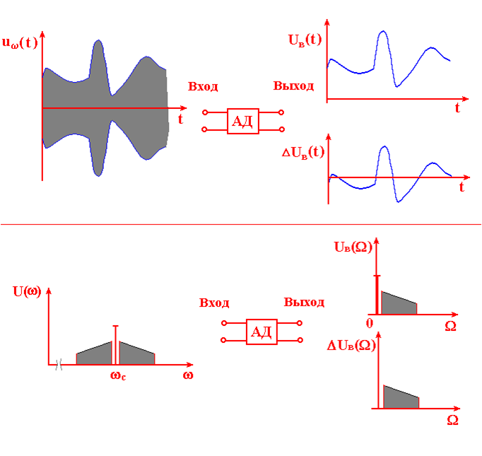
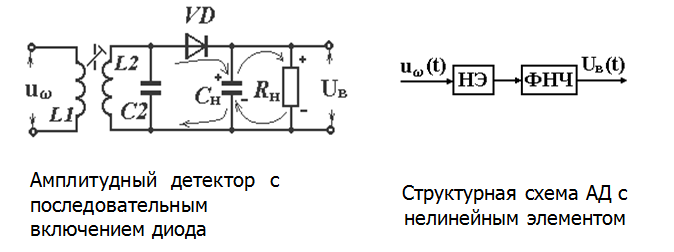
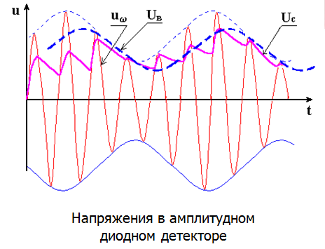
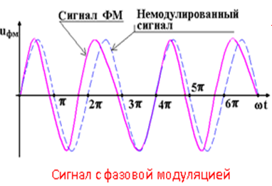
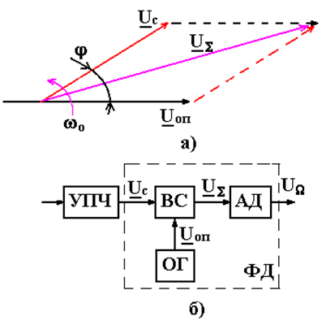
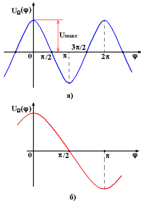

Принципы построения авиационных демодуляторов. Амплитудный детектор.Фазовый детектор.
Принципы построения авиационных демодуляторов. Амплитудные детекторы.

Детекторы предназначены для преобразования высокочастотного модулированного колебания в напряжение, меняющееся по закону модуляции. Необходимым условием детектирования является наличие в схеме детектора нелинейного элемента или элемента с изменяемыми параметрами. В современных авиационных радиоприемниках для детектирования непрерывных амплитудно-модулированных сигналов используют диодные и транзисторные детекторы как на дискретных элементах, так и в интегральном исполнении на полупроводниковых линейных интегральных схемах.
В диодном детекторе используются полупроводниковые диоды, которые почти вытеснили диоды вакуумные (последние еще применяются в бортовой аппаратуре ранних выпусков). Для детектирования слабых сигналов в диапазоне СВЧ применяют туннельные, обращенные диоды и диоды Шоттки.
Диодный полупроводниковый детектор может иметь как последовательную, так и параллельную схему включения.
В последовательной схеме диодного детектора источник входного напряжения Uвх, диод VD и нагрузка Rн включены последовательно, а в параллельной схеме - параллельно. Предпочтительны последовательные детекторы, имеющие относительно большее входное сопротивление.

На рисунке представлены временные диаграммы, которые характеризуют процесс преобразования входного амплитудно-модулированного сигнала в низкочастотный.

Принцип работы рассматриваемой схемы АД основан на использовании однополярной проводимости диода VD. Во время действия положительной полуволны высокочастотного напряжения диод VD открыт, конденсатор Сн быстро заряжается. При действии отрицательной полуволны диод VD закрыт. Конденсатор Сн разряжается через резистор Rн. На резисторе образуется падение напряжения, которое является выходным напряжением детектора. Амплитудные детекторы являются одной из составных частей схем фазовых и частотных детекторов, а так же широко применяются в системах автоматического регулирования в приёмниках
Фазовые детекторы
uс(t)=Uсcos[wot+j(t)+jo]
Полезная информация передается в законе модуляции j(t). Задачу определения закона модуляции, закона, по которому изменяется функция j(t), решает фазовый детектор (ФД).

Фазовый детектор предназначен для преобразования ВЧ фазомодулированного сигнала в низкочастотное напряжение, изменяющееся в соответствии с законом фазовой модуляции j(t).
ФД также может решать задачу определения разности фаз двух колебаний. В этом случае он носит название фазового дискриминатор.
Фазовый детектор применяется в основном тракте обработки сигнала в радиоприемнике, а фазовый дискриминатор – в системах радиоавтоматики.
В основе принципа работы ФД векторномерного типа лежит измерение модуля (амплитуды) вектора высокочастотного напряжения, образующегося в результате векторного суммирования векторов детектируемого ФМ сигнала и опорного напряжения. Алгоритм работы простого векторномерного ФД иллюстрируется при помощи векторной диаграммы и структурной схемы.

Как известно, векторное суммирование осуществляется по правилу параллелограмма. Вектор US, равный векторной сумме векторов Uс и Uоп, является диагональю параллелограмма, образованного указанными векторами и их параллельным переносом. При одновременной подаче напряжений Uс и Uоп на векторный сумматор ВС на его выходе образуется ВЧ напряжение UW, амплитуда которого является функцией разности фаз j(t) (закона фазовой модуляции). После амплитудного детектирования в АД на выходе образуется низкочастотное напряжение UW. Это напряжение при постоянных амплитудах напряжений Uс и Uоп зависит только от фазовой модуляции j(t).
Общий вид детекторной характеристики (а), и используемый ее монотонный участок (б):
